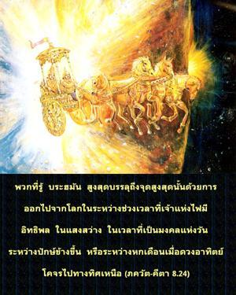
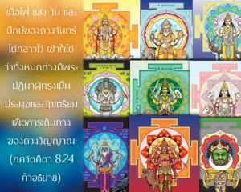
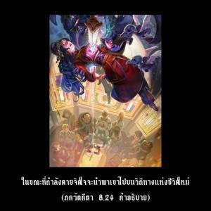

พวกที่รู้ พฺรหฺมนฺ สูงสุดบรรลุถึงจุดสูงสุดนั้นด้วยการออกไปจากโลกในระหว่างช่วงเวลาที่เจ้าแห่งไฟมีอิทธิพล ในแสงสว่าง ในเวลาที่เป็นมงคลแห่งวัน ระหว่างปักษ์ข้างขึ้น หรือระหว่างหกเดือนเมื่อดวงอาทิตย์โคจรไปทางทิศเหนือ



เมื่อไฟ แสง วัน และปักษ์ของดวงจันทร์ได้ถูกกล่าวไว้เข้าใจได้ว่าทั้งหมดต่างมีพระปฏิมาผู้ทรงเป็นประมุขและจัดเตรียมเพื่อการเดินทางของดวงวิญญาณ ในขณะที่กำลังตายจิตใจจะนำพาเขาไปบนวิถีทางแห่งชีวิตใหม่ หากออกจากร่างตามเวลาที่ได้กล่าวไว้ข้างต้นไม่ว่าด้วยอุบัติเหตุหรือด้วยการจัดเตรียมเป็นไปได้ที่เขาจะบรรลุถึง พฺรหฺม-โชฺยติรฺ ที่ไร้รูปลักษณ์ พวกโยคีที่เจริญก้าวหน้าในการฝึกปฏิบัติโยคะสามารถตระเตรียมเวลาและสถานที่ในการออกจากร่าง ผู้อื่นที่ไม่สามารถควบคุมได้หากบังเอิญที่ทำให้ออกจากร่างในเวลาที่เป็นมงคลก็จะไม่ต้องกลับมาในวัฎจักรแห่งการเกิดและการตาย มิฉะนั้นเป็นไปได้อย่างสูงว่าพวกเขาต้องกลับมาอีก อย่างไรก็ดีสำหรับสาวกผู้บริสุทธิ์ในกฺฤษฺณจิตสำนึกจะไม่มีความกลัวในการกลับมาไม่ว่าออกจากร่างนี้ไปในเวลาที่เป็นมงคลหรือไม่เป็นมงคล จะด้วยความบังเอิญหรือด้วยการเตรียมการก็ตาม